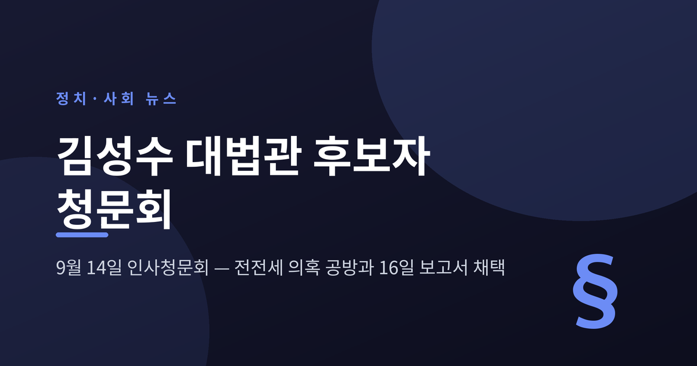
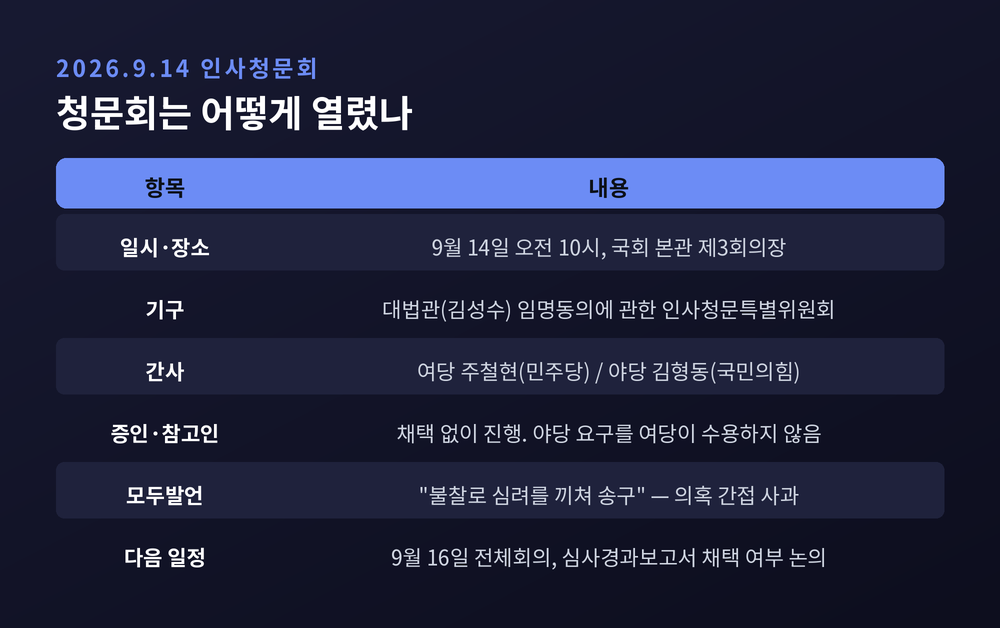
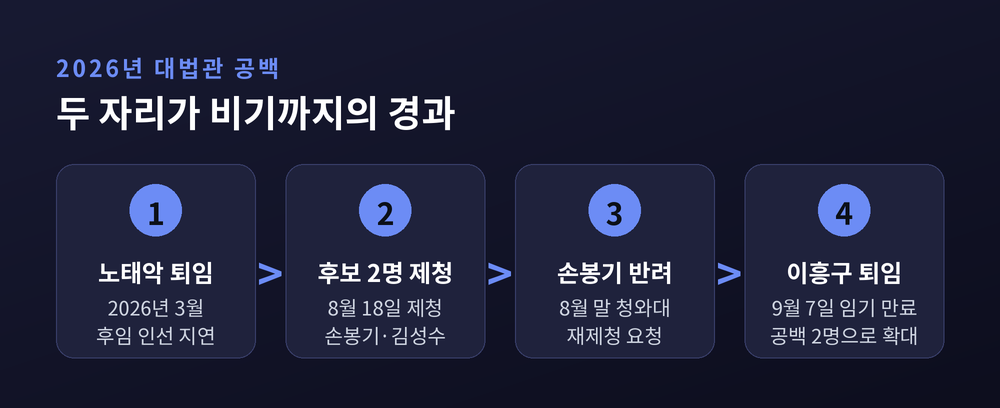
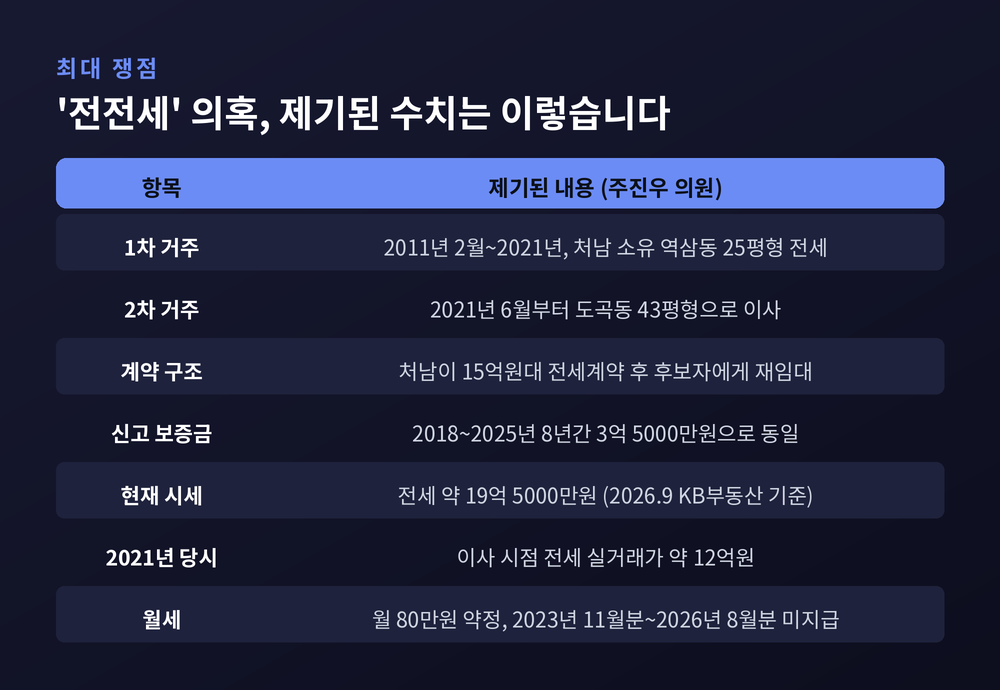
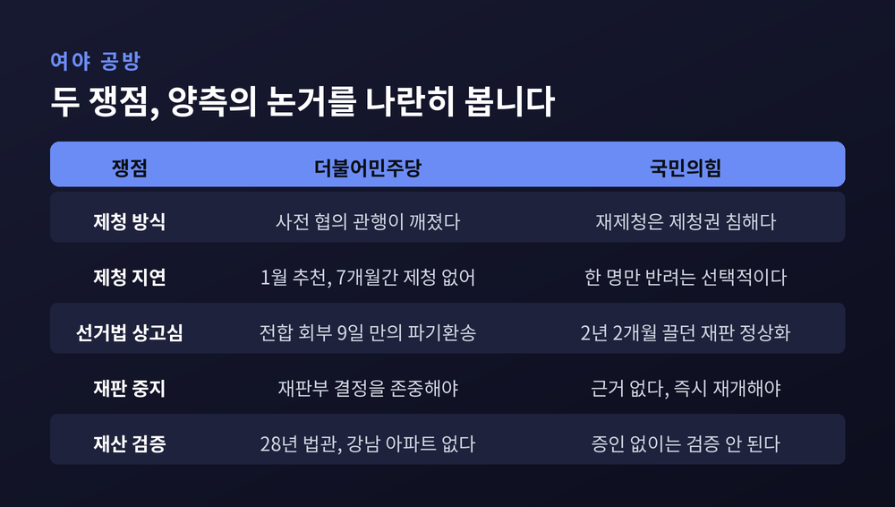
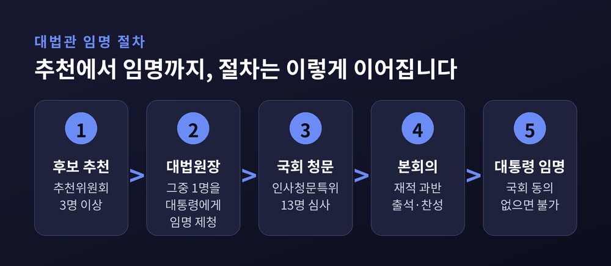

이번 글에서는 2026년 9월 14일 국회에서 열린 김성수 대법관 후보자 인사청문회를 정리해 보겠습니다. 무엇이 쟁점이었고 여야가 어디서 부딪쳤는지, 그리고 9월 16일 이후 어떤 절차가 남아 있는지 차례로 짚어보려 합니다.
청문회는 9월 14일 오전 10시에 시작됐습니다. 장소는 여의도 국회 본관 제3회의장이었습니다.
기구의 정식 명칭은 '대법관(김성수) 임명동의에 관한 인사청문특별위원회'입니다. 제439회 국회 정기회 일정 안에서 열렸습니다.
후보자는 선서를 마치고 모두발언에 들어갔습니다. 첫머리는 사과였습니다.
"청문회가 시작되기도 전에 저의 불찰로 위원님들과 국민 여러분께 심려를 끼쳐 드린 점에 대해 송구스럽게 생각한다."
제청 이후 불거진 강남 아파트 전세 논란을 겨냥한 발언으로 읽혔습니다. 다만 의혹을 직접 거명하지는 않았습니다. 이 대목을 두고 "구체적 해명이 없었다"는 지적도 나왔습니다.
이어 후보자는 사법부의 역할을 이야기했습니다. 사회가 빠르게 변하는 만큼 사법부도 뒤처져서는 안 된다는 취지였습니다.
"국회의 동의를 얻어 대법관으로 임명된다면 시대 변화를 면밀히 읽어 가며 사법부가 그 흐름에 맞춰 나갈 수 있도록 미력이나마 힘을 보태겠다."
재판에 임하는 자세로는 '공평무사'라는 표현을 썼습니다. 오직 헌법과 법률, 법관의 양심에 따라 사건을 살피겠다는 것이었습니다.
이번 청문회는 증인과 참고인 없이 진행됐습니다. 국민의힘은 처남 등의 증인 채택을 요구했지만 더불어민주당이 받아들이지 않았습니다.

대법원은 지금 대법관 두 자리가 비어 있습니다.
2026년 3월 노태악 대법관이 퇴임했습니다. 후임 인선은 청와대와 대법원의 이견으로 여섯 달 넘게 미뤄졌습니다. 여기에 9월 7일 이흥구 대법관이 6년 임기를 마치고 물러나면서 공백이 두 자리로 늘었습니다.
대법원의 소부는 대법관 네 명으로 구성됩니다. 전원합의체는 대법관 전원이 참여합니다. 두 자리가 비면 양쪽 모두 심리가 늦어질 수밖에 없습니다.
지금 전원합의체에는 무게가 큰 사건들이 걸려 있습니다. 김건희 여사의 도이치모터스 주가조작 등 사건, 한덕수 전 국무총리와 이상민 전 행정안전부 장관의 내란중요임무종사 등 혐의 사건이 계류 중입니다.
여기에 또 하나의 사정이 겹칩니다.
조희대 대법원장은 8월 18일 두 명을 서면으로 임명 제청했습니다. 노태악 대법관 후임으로는 손봉기 대구지법 부장판사를, 이흥구 대법관 후임으로는 김성수 서울고법 부장판사를 올렸습니다.
그런데 청와대는 손봉기 후보자에 대해서만 임명동의안을 국회에 내지 않았습니다. "사전 협의 없이 일방적으로 서면 제청됐다"는 것이 청와대가 밝힌 이유였습니다. 대신 대법원장에게 재제청을 요청했습니다. 김성수 후보자는 사전 협의를 거쳤다는 판단에 따라 동의안이 제출됐습니다.
대법원장의 제청을 받아들이지 않고 다시 제청해 달라고 요구한 사례는 1987년 현행 헌법 체제 이후 처음이라는 평가가 나옵니다.
예전 대법관 인선은 조용한 절차였습니다. 지금은 공백과 갈등이 함께 얹힌 사안이 됐습니다.

이번 청문회의 중심에는 주거 문제가 있었습니다.
의혹을 제기한 쪽은 주진우 국민의힘 의원입니다. 9월 2일 보도자료와 기자회견을 통해 후보자의 재산신고 내역, 주민등록자료, 부동산 등기부를 분석한 결과라며 내용을 공개했습니다.
주 의원이 밝힌 내용은 이렇습니다. 후보자는 2011년 2월부터 약 10년간 처남 소유의 강남구 역삼동 아파트 25평형에 전세로 살았습니다. 2021년 6월에는 도곡동 '도곡렉슬' 43평형으로 옮겼습니다.
이 과정에서 처남이 집주인과 15억 원대 전세계약을 맺은 뒤, 후보자에게 다시 전세를 놓는 이른바 '전전세' 방식이 쓰였다는 것이 주 의원의 지적입니다.
후보자가 2018년부터 2025년까지 8년간 신고한 임차보증금은 3억 5000만 원으로 같았습니다. 반면 해당 아파트의 2026년 9월 KB부동산 기준 전세 시세는 약 19억 5000만 원입니다. 2021년 이사 당시 전세 실거래가는 약 12억 원으로 알려졌습니다.
보증금 외에 매달 80만 원 수준의 월세를 주기로 했는데, 2023년 11월분부터 2026년 8월분까지가 지급되지 않았다는 지적도 함께 나왔습니다.
주 의원은 "전세금 시세와의 차액은 법률상 증여세 부과 대상"이라며 특수관계인으로부터 금전적 특혜를 받은 것이라고 주장했습니다.
후보자의 해명은 이렇습니다.
동거 경위에 대해서는 가족 사정을 들었습니다. 처남이 다니던 회사가 판교에서 역삼동 인근으로 옮길 상황이 됐고, 장모가 조금 더 넓은 아파트를 얻어 함께 지내는 것이 어떻겠냐고 권했다는 설명이었습니다. 미혼인 처남을 염려한 제안이었다는 것입니다.
증여 여부에 대해서는 "당시에는 개인적으로 증여받는다는 의사가 전혀 없었다"고 답했습니다. 처남에게 이미 지급한 보증금 채권 일부를 갖고 있었고, 금융 조달 비용을 분담하기로 했기 때문에 증여라고 생각하지 못했다는 취지였습니다.
그러면서 잘못은 인정했습니다. 청문회를 준비하는 과정에서 '증여 의제'가 될 수 있다는 점을 알게 됐다며, 법조인으로서 그것을 몰랐다는 점이 국민 눈높이에 송구하다고 밝혔습니다.
납부 절차도 언급했습니다. 세무사를 통해 과세 대상 여부를 검토했고, 청문회 당일 오전 중 해당 부분의 납부 절차를 진행하고 있다고 설명했습니다. 밀렸던 월세는 최근 일괄 납부했다고 덧붙였습니다.
여기서 한 가지는 분명히 해 둘 필요가 있습니다. 증여세 부과 여부와 규모에 대한 과세관청의 확정된 판단은 아직 확인되지 않았습니다. 후보자가 밝힌 납부 금액도 공개되지 않았습니다. 현재까지는 제기된 의혹과 이에 대한 해명이 맞서 있는 단계입니다.

의혹 검증과는 별개로, 청문회는 두 개의 큰 쟁점에서 정면으로 갈렸습니다.
첫째, 대법원장의 제청권 행사입니다.
더불어민주당은 관행이 지켜지지 않았다고 봤습니다. 박지혜 의원은 헌법 제104조 2항이 제청·동의·임명이라는 세 권한의 조화를 담은 규정이지 어느 기관의 우위를 정한 것이 아니라고 했습니다. 수십 년간 청와대와 대법원이 사전에 접촉해 의사가 일치하는 후보를 추린 뒤 대면 제청해 왔는데 이번에는 그러지 않았다는 지적입니다. 노태악 대법관 후임 추천이 1월에 이미 이뤄졌는데도 제청까지 7개월이 걸렸다는 점도 문제 삼았습니다. 김한규 의원은 단독 제청이 삼부 간 갈등만 키웠다고 비판했습니다.
국민의힘은 반대편에 섰습니다. 주진우 의원은 "대법관 재제청이라는 말을 교과서에서 들어본 적 있나"라고 되물었습니다. 한 명은 통과시키고 한 명은 반려하는 선택적 재제청이 헌법상 가능하냐는 문제 제기였습니다. 대통령이 반려한 사람을 빼고 다시 고르라는 요구는 대법원장의 제청권을 본질적으로 침해한다는 주장입니다.
둘째, 이재명 대통령의 공직선거법 재판입니다.
민주당 채현일 의원은 지난 대선 당시 대법원 전원합의체가 사건을 넘겨받은 지 9일 만에 파기환송한 점을 문제 삼았습니다. 수만 페이지의 기록이 얽힌 사건을 그 기간에 마치는 것이 28년 재판 경험에 비춰 가능하냐는 질의였습니다.
국민의힘 주진우 의원은 정반대로 봤습니다. 해당 재판이 2년 2개월을 끌어왔고, 오히려 신속재판 원칙을 지키게 한 것을 이례적이라고 할 수 있느냐고 반박했습니다. 윤용근 의원은 대통령 취임 전 이미 기소돼 진행 중인 형사재판을 중단할 법적 근거가 있느냐고 물었고, 강민국 의원은 정지된 재판을 즉시 재개해야 하지 않느냐고 따졌습니다.
후보자의 답변은 원론에 머물렀습니다.
9일 만의 파기환송에 대해서는 "절차적인 진행이 다소 이례적이었다고는 이야기할 수 있겠다"고 했습니다. 다만 구체적 사건은 재판부가 여러 상황을 고려해 절차를 정하는 것이어서 적절성을 자신이 말하기는 어렵다고 선을 그었습니다.
재판 중단에 대해서는 재판부가 심사숙고해 결정했을 것으로 믿고 그 결정을 존중한다고 답했습니다. 재개 요구에는 진행 중인 사건은 해당 재판부의 재판권에 속하며 대법원조차 관여할 수 없다고 했습니다.
제청권 문제에 대해서도 원론을 유지했습니다. 대통령과 대법원장이 상호 존중과 이해를 바탕으로 제청해 온 관행을 지키는 것이 국민의 뜻에 맞는다는 정도였습니다. 조희대 대법원장을 향한 여권의 공세에는 견제와 균형의 원리에 따른 비판은 가능하겠지만 사법부 구성원으로서 바람직하다고 보기는 어렵다고 답했습니다.

도덕성 검증에서는 재산 규모가 뜻밖의 변수가 됐습니다.
후보자가 신고한 본인과 배우자 등 가족 명의 재산은 총 5억 8000만 원 규모입니다. 본인 명의가 1억 7464만 원, 배우자 명의가 1722만 원입니다.
민주당은 이 수치를 방어 논리로 썼습니다. 채현일 의원은 28년간 고등법원 부장판사까지 지내면서 강남에 본인 명의 아파트 한 채가 없다는 점을 들어, 재판에만 전념하며 청빈하게 살아온 것으로 본다고 했습니다. 부승찬 의원은 가족 사이에서는 세금 관계를 엄밀히 따지지 않고 지낼 수 있다며, 세금을 내겠다고 하면 정리되는 사안이라고 반박했습니다.
여당 간사인 주철현 의원은 증인 채택 요구도 되받았습니다. 후보자 본인이 아닌 가족과 관련된 사안이라 개인 신상을 과도하게 노출하는 것은 문제이며, 후보자가 숨기지 않고 인정하고 있다는 점을 근거로 들었습니다.
국민의힘은 물러서지 않았습니다. 야당 간사 김형동 의원은 증인과 참고인 없는 청문회가 '뉴노멀'처럼 굳어지고 있다며, 그런 검증이 대법관 직무 수행에 도움이 되겠느냐고 문제를 제기했습니다.
한편 최근 5년간 스쿨존 신호·지시 위반 등 도로교통법 위반 이력이 네 차례 있다는 점도 질의 대상으로 거론됐습니다.
절차를 알면 남은 일정이 선명해집니다.
헌법 제104조 2항은 "대법관은 대법원장의 제청으로 국회의 동의를 얻어 대통령이 임명한다"고 정하고 있습니다. 실무는 네 단계로 굴러갑니다.
대법관후보추천위원회가 3명 이상을 추천합니다. 대법원장이 그중 한 명을 골라 대통령에게 제청합니다. 국회 인사청문특별위원회가 인사청문을 거쳐 본회의 임명동의안 표결에 부칩니다. 여기서 동의를 얻으면 대통령이 임명합니다. 자격 요건은 법조 경력 20년 이상, 45세 이상입니다.
인사청문회법은 기한도 정해 두었습니다. 인사청문특별위원회는 국회의원 13명으로 구성됩니다. 국회는 임명동의안을 받은 날부터 20일 이내에 처리해야 합니다. 위원회는 회부된 날부터 15일 이내에 심사를 마쳐야 하고, 청문회 기간은 3일 이내입니다. 청문회를 마친 날부터 3일 이내에 심사경과보고서를 의장에게 제출해야 합니다.
9월 14일 청문회에 이어 9월 16일에 보고서 채택을 논의하는 일정은 이 기한에 맞춘 것입니다.
여기서 장관 인사청문과의 차이를 짚어둘 필요가 있습니다. 국무위원은 국회 동의 없이도 대통령이 임명할 수 있습니다. 대법관은 다릅니다. 헌법이 국회 동의를 요구하고 있어, 본회의 문턱을 넘지 못하면 임명 자체가 불가능합니다. 본회의 의결은 재적의원 과반수가 출석하고 출석의원 과반수가 찬성해야 가결됩니다.
심사경과보고서 채택은 그 본회의로 가기 위한 관문인 셈입니다.

인사청문특별위원회는 9월 16일 전체회의를 엽니다. 여기서 임명동의안 심사경과보고서 채택 여부를 논의합니다.
보고서가 채택되면 임명동의안은 본회의로 올라갑니다. 표결을 통과하면 대통령이 새 대법관을 임명하게 됩니다.
다만 현재로서는 여야 어느 쪽도 채택이나 불채택을 공식적으로 못 박지 않았습니다. 청문회에서 드러난 온도차를 보면 16일 회의가 순탄하리라고 단정하기는 어렵습니다.
참고가 될 만한 기록은 있습니다. 헌정사에서 대법원장과 대법관 후보자가 낙마한 사례는 각각 한 번씩뿐이었습니다.
1988년 정기승 대법원장 후보자는 임명동의안이 부결됐습니다. 재석 295명 가운데 찬성이 141표에 그쳐 가결정족수 148표에 7표가 모자랐습니다. 2012년 김병화 대법관 후보자는 저축은행 관련 의혹 등이 겹치면서 자진 사퇴했습니다. 이후 2023년에는 이균용 대법원장 후보자 임명동의안이 부결되기도 했습니다.
숫자만 보면 대법관 후보자가 국회 문턱에서 좌절한 경우는 드물었습니다. 그러나 이번에는 사정이 조금 다릅니다. 검증 대상인 개인의 문제만이 아니라, 대법관 두 자리의 공백과 제청권을 둘러싼 헌법기관 간 갈등이 같은 자리에 놓여 있기 때문입니다.
정리하면 이렇습니다.
9월 14일 청문회는 전전세 의혹에 대한 후보자의 사과와 납부 의사 표명, 그리고 제청권과 대통령 재판을 둘러싼 여야의 정면 충돌로 요약됩니다. 결론은 아직 나지 않았습니다.
"검증은 사람 한 명을 보는 일이지만, 그 결과는 재판을 기다리는 모든 사람에게 돌아갑니다."
대법관 한 자리가 채워지는 데 걸리는 시간만큼, 판결을 기다리는 사건의 줄도 길어집니다. 9월 16일 국회가 어떤 선택을 할지, 차분히 지켜보면 좋겠습니다.